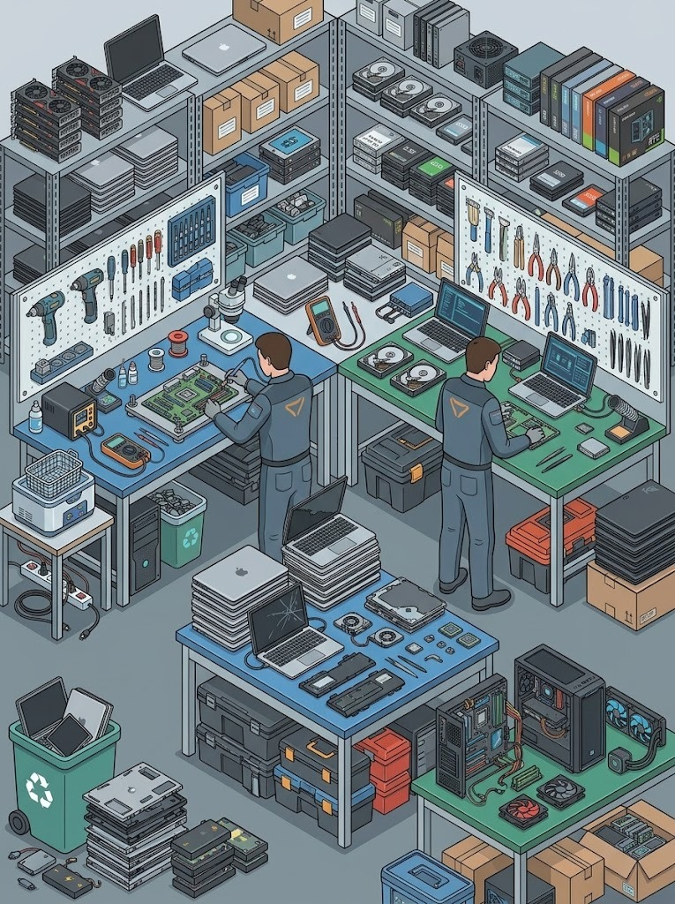
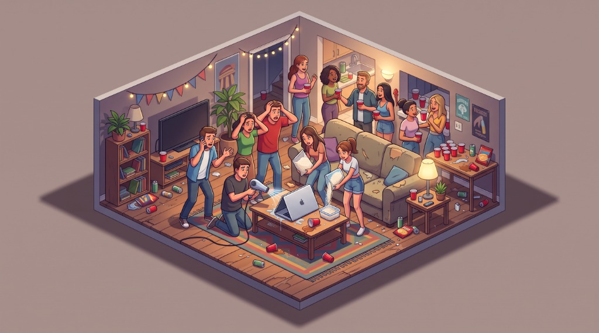
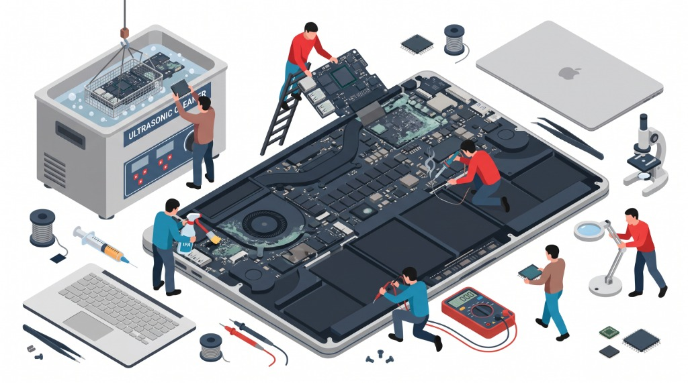

Liquid Damaged Laptop & MacBook Repair Brisbane
Spilled water, coffee, wine, or tea on your laptop? We specialize in ultrasonic logic board decontamination, microscope component-level soldering, and emergency NAND data recovery across Greater Brisbane. Don't pay $1,500+ for an Apple logic board replacement when we can repair the original board.

Dedicated Motherboard & Logic Board Restoration Standards
Unlike generic repair stores that automatically quote $1,500+ logic board replacements, our Brisbane lab repairs original circuit boards down to the microscopic surface-mount component level.
40,000Hz Ultrasonic Cavitation Bath
Cavitation micro-bubbles implode at 40kHz, washing away conductive mineral shorts and corrosion trapped beneath surface-soldered BGA chips.
Micro-Soldering & Trace Rebuilding
Replacing burned 0201 capacitors, blown MOSFETs, and rebuilding severed copper traces under 40x stereoscopic magnification.
Emergency Soldered NAND Data Retrieval
Direct low-voltage power rail injection bypasses blown PMICs to safely pull files from Apple Silicon (M1–M4) and soldered PC SSDs.
100% Bench Diagnostic Credit
Your $50–$150 teardown & microscope corrosion mapping fee is credited 100% toward your approved repair. Transparent, honest pricing.
The "Golden Hour" Spill Protocol: What to Do Right Now
Follow these 4 non-negotiable steps immediately to save your motherboard from catastrophic permanent electrolysis.
Cut AC Power Instantly
Yank the charger plug out of the laptop or wall socket immediately. Do not waste precious seconds closing open documents, saving tabs, or shutting down gracefully.
Hard Power Off (10 Secs)
Press and hold down the physical power button firmly for 10 straight seconds until all lights, keyboard backlights, and fan noises are completely dead silent.
DO NOT Turn It On to "Test"
Resist all temptation to turn it back on. The biggest cause of total circuit board death is users pressing the power button to see if it miraculously works, which vaporizes energized circuits.
Upside-Down "Tent" Mode
Open the screen to 90 degrees and stand the laptop upside down like an inverted "V" on a thick absorbent towel. Gravity will pull pooling liquid downward away from the motherboard.

Why the "Bag of Rice" & Hairdryer Myths Will Destroy Your Laptop
When a drink gets knocked over onto a keyboard at a party or home office, the instinctive reaction is often to grab uncooked rice or a hot hairdryer. As professional hardware engineers, we see laptops ruined every single week by these two internet myths.
❌ The Rice Myth: It Doesn't Work
Uncooked rice is a passive desiccant with virtually zero pulling power. It cannot draw moisture out from underneath surface-mount Ball Grid Array (BGA) microchips, CPUs, and metal RF shield enclosures. Worse, dry rice releases fine talc powder and starch that seeps into keyboard scissor switches, USB ports, and fan bearings, creating a corrosive, gummy paste that cements electronic components.
❌ The Hairdryer Myth: It Bakes Corrosion
Blasting a laptop with a hairdryer melts delicate plastic keycaps and keyboard membranes. More dangerously, blowing high-velocity hot air forces standing liquid deeper into the inner multilayer printed circuit board (PCB) layers, while heat dramatically accelerates galvanic oxidation. You evaporate the pure water molecules and leave behind concentrated crusts of corrosive mineral salts and acids directly on energized circuits.
Our 6-Stage Ultrasonic Logic Board Recovery Protocol
Water damage isn't just about drying out a computer; it's about eliminating galvanic corrosion, dissolved mineral conductors, and microscopic shorts. Here is exactly how our Brisbane laboratory revives liquid-damaged MacBooks and PC laptops.

Anti-Static Teardown & Battery Isolation
Within minutes of arriving at the lab, we open the chassis using specialized pentalobe or torx tooling. The battery management system (BMS) flex cable is detached immediately to eliminate all trace current from the motherboard.
⚡ Eliminates Active DC CurrentStereoscopic Microscope Corrosion Mapping
The logic board is extracted from the casing and examined under a 40x stereo zoom microscope. We identify green copper carbonate blooms, burnt 0201 surface-mount capacitors, and blown power rail MOSFETs.
🔬 40x Optical InspectionMulti-Frequency Heated Ultrasonic Cavitation
The motherboard is immersed in our temperature-controlled Crest ultrasonic tank filled with specialized electronic PCB flux and mineral stripper. High-frequency sound waves create microscopic vacuum bubbles that scrub beneath tight BGA packages.
🌊 40kHz Ultrasonic Cavitation99.9% Anhydrous IPA Bath & Dehydration Oven
Following ultrasonic cleaning, the board is rinsed in a 99.9% electronic-grade anhydrous Isopropyl Alcohol bath to displace any residual water, followed by a 4-hour controlled dehydration bake in a thermal drying oven at 60°C.
🔥 60°C Thermal DehydrationPrecision Micro-Soldering & Trace Repair
Using fine 0.02mm insulated copper enamel micro-jumpers and high-precision Hakko soldering irons, we replace shorted ceramic capacitors, burnt USB-C CD3215/CD3217 chips, and reconstruct eaten circuit traces.
🛠️ 0.02mm Micro-Jumper WirePower Rail Validation & Thermal Repasting
We inject voltage and measure all primary power rails (PPBUS_G3H, 3V3_G3H, 5V_S5, CPU VCORE) with digital multimeters and oscilloscopes. Premium Arctic MX-6 thermal paste is applied before stress testing.
📊 PPBUS_G3H Rail VerificationNot All Liquids Are Equal: What Was Spilled?
Different liquids behave differently on a microchip. The acidity, sugar content, and mineral concentration determine how fast circuits are eaten and what chemical neutralizing bath is required.
Water Spills
Pure water itself isn't a strong conductor, but municipal tap water is loaded with dissolved calcium, chlorine, and conductive minerals. If disconnected immediately, water spills have the highest recovery rate (over 90%) with prompt ultrasonic cleaning.
Coffee & Tea Spills
Coffee and tea are rich in tannins, polyphenols, and acids. As the liquid dries, it leaves behind sticky dark crusts that bridge tiny 0.5mm solder ball contacts under BGA chips. Sugar dramatically accelerates mold and electrical conductivity.
Alcoholic Beverages
Wine is highly acidic (pH 3.0 to 3.8). While the ethanol evaporates, the remaining fruit acids and sugars relentlessly dissolve solder joints and copper tracks for days. Beer leaves heavy carbohydrate deposits that must be sonically scrubbed.
Milk & Fizzy Drinks
The most hazardous category. Soft drinks contain citric and phosphoric acids that eat copper within hours. Milk fats rot under chips, releasing lactic acid and causing severe electrical short circuits. Immediate professional decontamination is mandatory.
Liquid Damage Repair Across All Major Laptop Brands
Every manufacturer engineers their motherboards with specific vulnerability points, liquid contact indicators (LCIs), and power sequencing circuits. Here is our bench experience with major brands:
| Laptop Brand / Family | Common Liquid Failure Points | Our Component-Level Repair Approach |
|---|---|---|
| 🍎 Apple MacBook (Air & Pro) | Corroded CD3215 / CD3217 / CD3218 USB-C controllers (causing 5V 0.00A stuck charger draw), blown PPBUS_G3H backlight boost diodes, liquid triggered SMC/T2/M1-M4 lockouts, and corrosion across soldered NAND flash power lines. | Ultrasonic logic board immersion, replacement of burned USB-C multiplexers, micro-soldering backlight fuses, and targeted NAND power line injection for data extraction. |
| 💻 Lenovo (ThinkPad, IdeaPad, Legion) | While enterprise ThinkPads feature bottom spill drainage holes, heavy spills overflow into the keyboard membrane and seep onto the discrete GPU power delivery rails, frying high-side MOSFETs. | Complete board isolation, drainage channel descaling, replacement of shorted DrMOS power stages, and keyboard assembly renewal. |
| ⚡ HP (Spectre, Envy, Pavilion, Omen) | HP laptops frequently suffer from burnt DC-in charging daughterboards, liquid ingress through bottom speaker grills, and "HP System Fan 90B" tachometer controller shorts post-spill. | DC-jack daughterboard replacement, thermal sensor resistor array rebuild, ultrasonic cleaning of cooling fan tachometers, and BIOS chip reprogramming. |
| 🎮 ASUS (ROG, Zephyrus, TUF, ZenBook) | ASUS gaming laptops utilize liquid metal thermal compound on newer AMD/Intel CPUs. When combined with beverage spills, the liquid metal barrier can break, bridging CPU contacts with water and shorting the VCORE line. | Careful liquid metal barrier containment, chemical de-oxidation, micro-soldering burned VRM chokes and capacitors, and repasting with high-viscosity thermal paste. |
| 🏢 Dell (XPS, Latitude, Inspiron, Alienware) | Dell XPS carbon fiber palmrests trap liquid under the precision glass trackpad, corroding the touchpad ribbon cable and shorting the 3.3V always-on power rail directly to the southbridge/PCH. | Touchpad flex rebuild, 3.3V standby rail short-to-ground isolation with thermal imaging, and embedded controller (EC) replacement. |
| 🎯 Acer, MSI & Razer Blade | Razer Blade vapor chambers oxidize rapidly under acidic spills; MSI laptops frequently experience blown high-voltage LCD backlight inverter traces; Acer keyboard power buttons short permanently to ground. | Vapor chamber leak-testing, trace jumper reconstruction on high-voltage LED backlight lines, and keyboard matrix isolation. |
Emergency Data Recovery When the Laptop Cannot Be Revived
Sometimes a laptop has suffered severe high-voltage short-circuits that burnt straight through the internal multi-layer PCB fiberglass substrate, rendering full hardware restoration uneconomical.
Your data is still our #1 priority.
- ✓ PC Laptops (Dell, HP, Lenovo, ASUS): We extract the modular M.2 NVMe or SATA SSD directly from the water-damaged board, clean the gold contact pins, and clone your entire operating system, documents, photos, and emails to a high-speed external drive.
- ✓ Apple Silicon MacBooks (M1, M2, M3, M4): Since Apple solders storage NAND flash chips directly to the logic board, you cannot simply remove the drive. Our lab micro-solders emergency power injection bypasses to supply clean 1.8V and 2.5V directly to the NAND controller, allowing us to connect via Apple Configurator / DFU mode to extract 100% of your critical encrypted data.
Liquid Damage Diagnostic Fee & Repair Pricing
Unlike standard software jobs, liquid damaged computers require immediate manual anti-static teardown, battery de-soldering/isolation, microscopic corrosion inspection, and cleaning readiness assessment.
Precision Teardown Diagnostic
Fee varies depending on mechanical chassis complexity (standard Windows laptop vs bonded multi-layer MacBook / ultrabook).
- Complete chassis disassembly
- Immediate battery isolation
- 40x microscope corrosion mapping
- 100% credited toward repair
Ultrasonic Clean & Micro-Soldering
Full multi-frequency heated ultrasonic tank wash, dehydration bake, and component-level micro-soldering.
- Includes heated ultrasonic bath
- 0201 cap & MOSFET replacement
- Thermal repasting with Arctic MX-6
- Full hardware guarantee on repairs
Spill Data Recovery
Dedicated data rescue for dead laptops where the motherboard cannot be salvaged.
- NVMe / SATA SSD forensic cloning
- Soldered Apple Silicon NAND power injection
- Target Disk / DFU extraction
- Zero Data, Zero Extraction Fee
Liquid Damage Repair: Expert Answers
Straightforward answers to the most common questions regarding spilled drinks, MacBook logic board cleaning, repair turnaround, and data safety.
Can a liquid-damaged laptop or MacBook really be fixed?
Does putting a liquid-damaged laptop in rice work?
Why did my laptop work for 2 hours after the spill and then suddenly die?
How much does liquid damage repair and diagnostics cost in Brisbane?
Can you recover my data if the motherboard cannot be fixed?
What is the difference between water, coffee, wine, and beer spills?
Servicing All Greater Brisbane Suburbs with Zero Call-Out Charges
Time is your biggest enemy when liquid enters a computer. We offer rapid mobile pickup or emergency lab drop-off across all Brisbane regions:
Western Suburbs
Indooroopilly (4068), Toowong (4066), St Lucia (4067), Taringa, Kenmore (4069), Chapel Hill, Graceville, Sherwood.
Inner City & Central
Brisbane CBD (4000), Spring Hill, South Brisbane (4101), West End, Fortitude Valley (4006), New Farm (4005), Teneriffe.
Northern Suburbs
Chermside (4032), Ashgrove (4060), Kelvin Grove (4059), Paddington (4064), Stafford, Nundah, Lutwyche, Everton Park.
Southern & Eastern
Mount Gravatt (4122), Carindale, Coorparoo, Woolloongabba, Kangaroo Point, Bulimba, Hawthorne, Greenslopes.